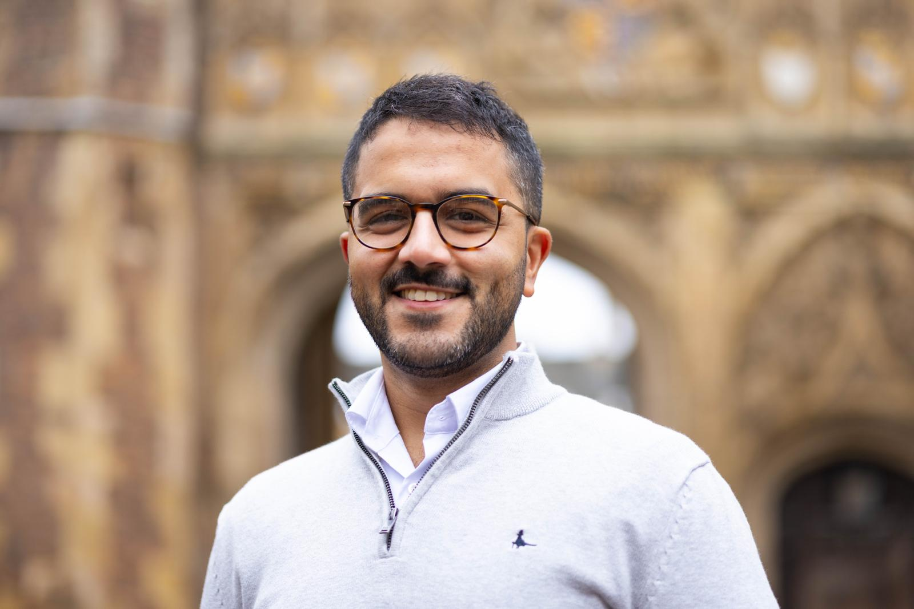
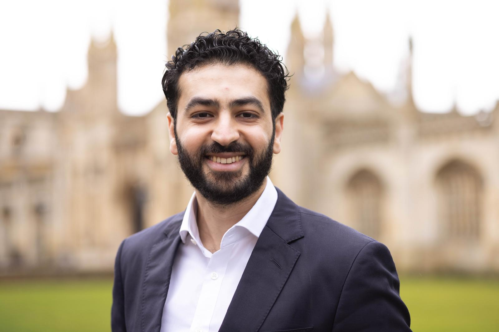
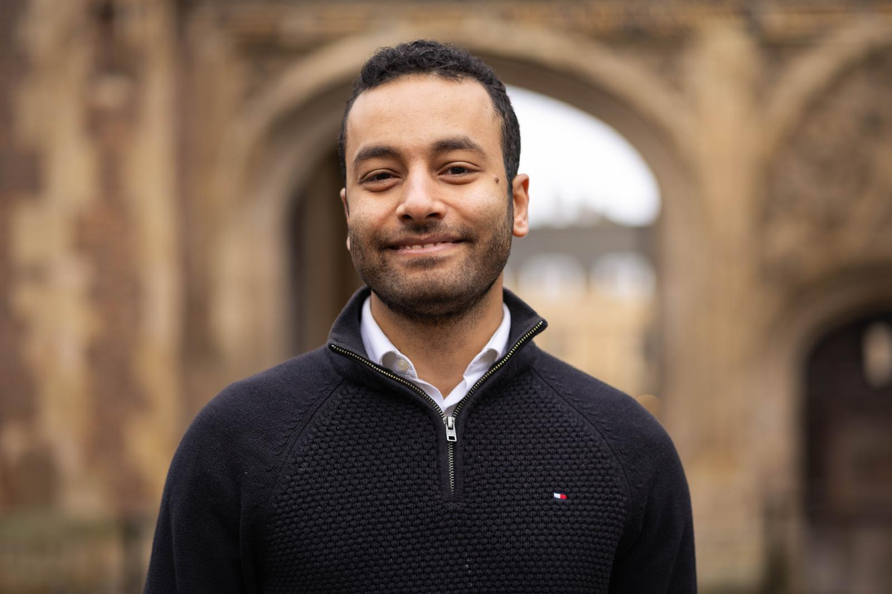

Why Masarak
The gap between good students and admitted students is proof.
Oxford receives 23,000+ applications for 3,300 places. Cambridge looks for evidence of critical thinking, initiative, and exploration beyond school. Masarak gives students that evidence.
Dr. Omar, University of Edinburgh
Biology
Biomedical Sciences
Energy & Environment
Engineering
Biology

Dr. Yousef, University of CambridgeBiomedical Sciences

Dr. Samuel, University of CambridgeEnergy & Environment

Dr. Samer, University of CambridgeEngineering
PhD mentor from a top university
Student work directly with PhDs from top universities like Cambridge and Oxford
Real project, real output
Something real they built themselves, in their own field, that no other applicant can claim.
Soft skills & showcasing
Develop the skills to effectively show the work and walk into any interview and own the room.